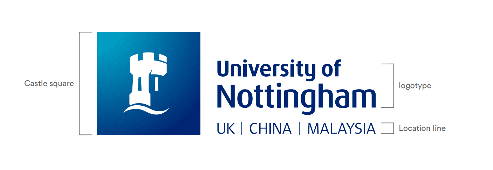
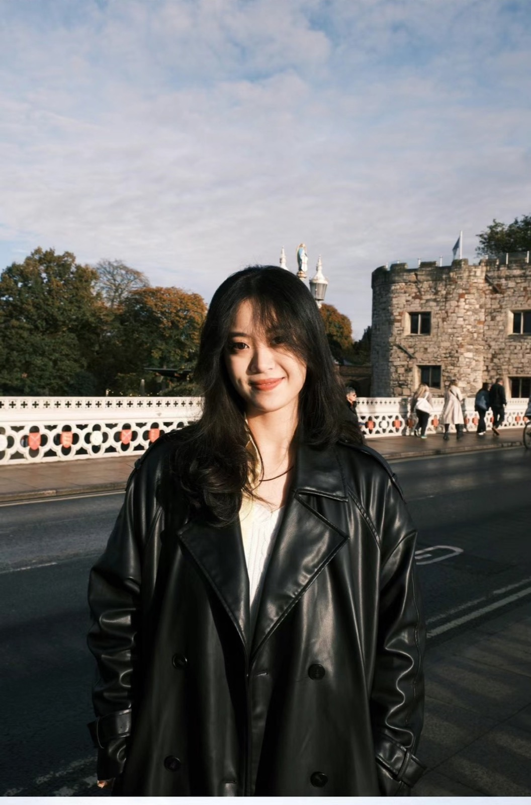
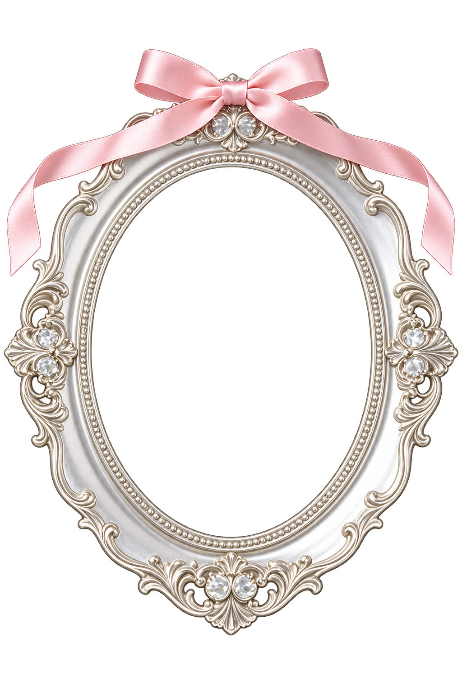
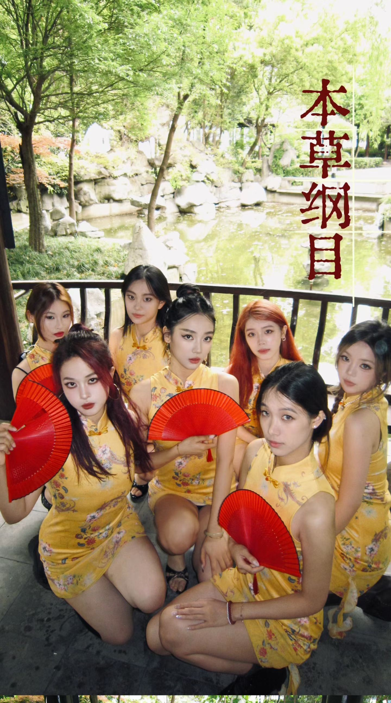
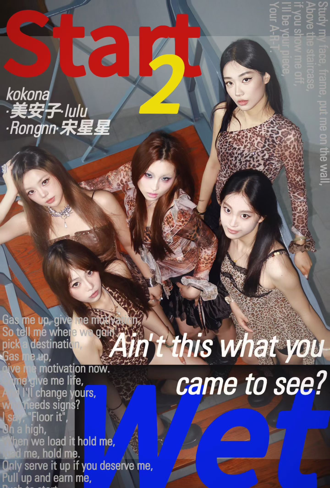
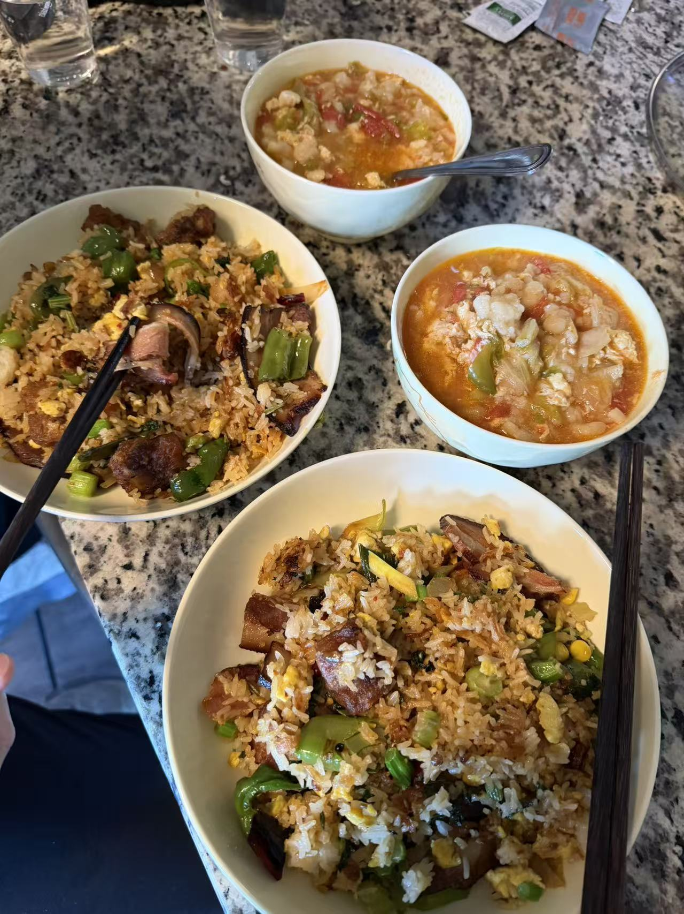
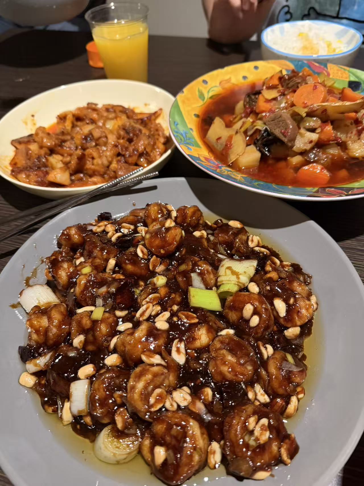
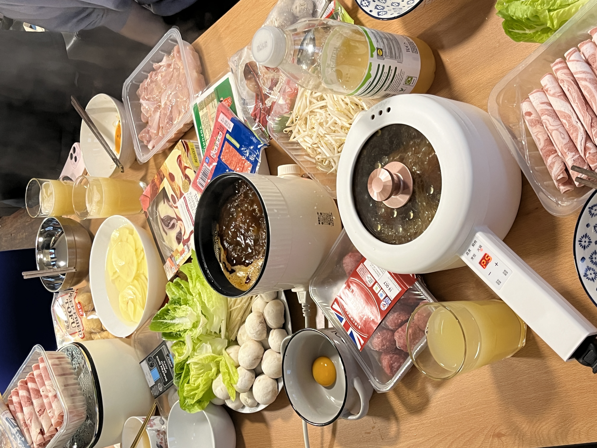
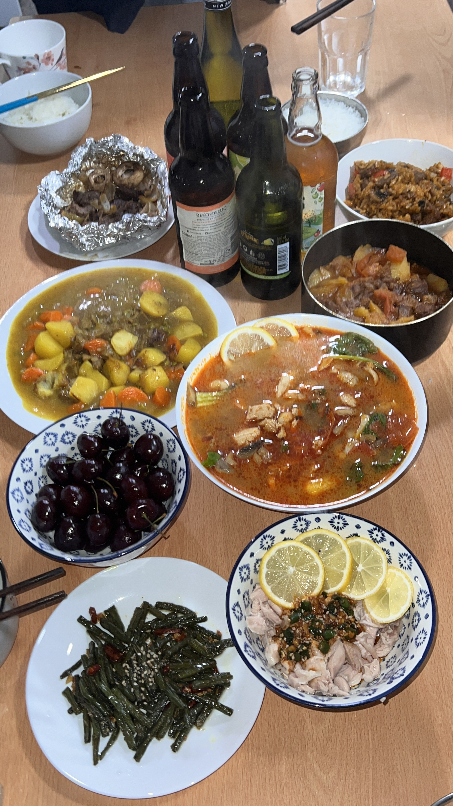
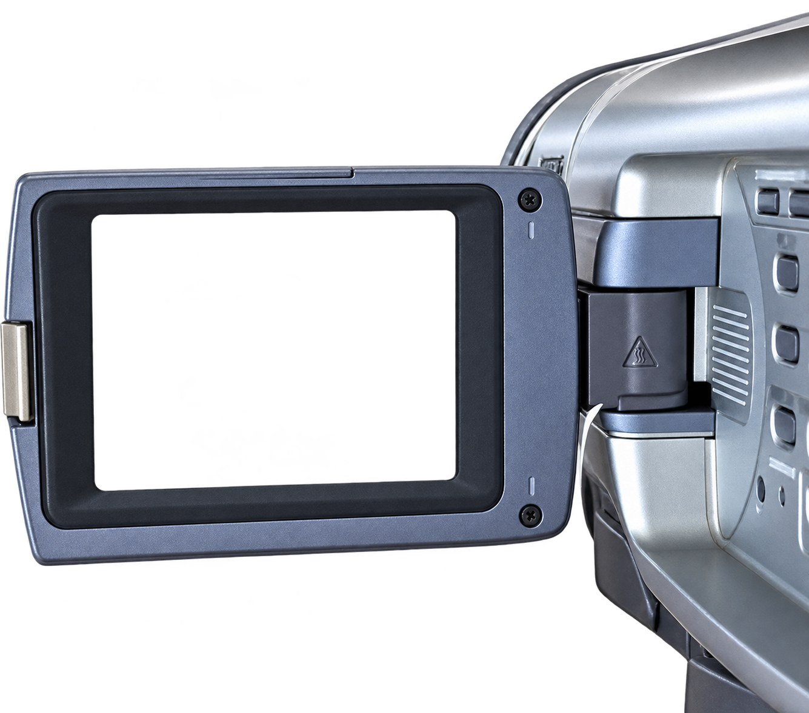

你好，我是芷昕。
本科毕业于宁波诺丁汉大学金融财务与管理专业，现在就读于康奈尔大学应用经济与管理硕士。我喜欢从数据里找线索，也喜欢在音乐里找节奏。英国诺丁汉大学的交换经历，让我多了一扇看世界的窗。
本科毕业于宁波诺丁汉大学金融财务与管理专业，现在就读于康奈尔大学应用经济与管理硕士。我喜欢从数据里找线索，也喜欢在音乐里找节奏。英国诺丁汉大学的交换经历，让我多了一扇看世界的窗。




ZHIXIN SONG · KRYSTAL三段实习，三个观察商业的窗口。
点击下面的一段经历，脚印会亮到那里。
跟踪重点商家交易与直播表现，参与商家分层、补贴实验和品牌活动。参与的联名活动首日支付 GMV 超 400 万元，十天活动期交易 GMV 超 1,000 万元。
用销售数据与用户反馈支持果蔬选品、推荐位和活动执行；跟进 10 余款新品上架。相关活动点击率提升 22%，所跟进新品首月销量超 5,000 单。
制作招商材料，整理开业客流、销售与传播数据，支持活动复盘及跨方协调。所在商场开业前三天客流达 43 万人次，销售额超 2,700 万元。
音乐响起，我就想和朋友们一起跳起来。排练、上台、拍下一张张合照，都是我很珍惜的快乐。


我喜欢做饭，也喜欢和朋友围着一桌热气腾腾的食物聊天。每一道菜，都留着一点当时的生活。




我爱把沿途的颜色和风景收进镜头：樱花、海边、雪山，还有在天黑以后依然发亮的城堡。

输入地名，选择匹配地点，经纬度会自动确认。每个地点都能挂多张照片。